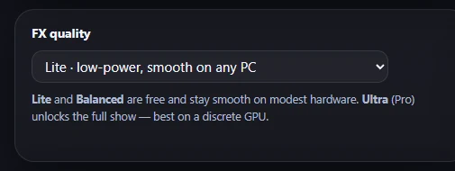
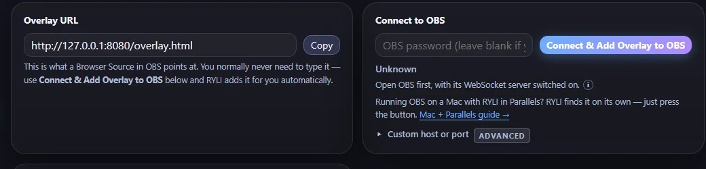

You do not have to work any of this out.
On first launch RYLI reads your CPU and picks its own effects level and voice engine, then shows you what it chose. This page is for the people who want to know what it looked at and why — and for anyone deciding whether their PC is up to it before they download.
Windows 10 or 11
64-bit. The installer is a normal signed .exe — no admin rights, no command line, nothing to configure.
OBS Studio
RYLI adds its own Browser Source for you at setup. If you already stream, you already have everything.
About 1 GB of disk
The app itself, plus a one-time ~326 MB voice model if you use the local neural voice. After that it never phones home to speak.
Three effects levels, and what decides yours.
The number RYLI actually looks at is your CPU core count. It is a rough proxy — a discrete GPU is the real signal — but it is the one thing that can be read reliably on every machine, and it errs toward smooth.
Lite
Under 4 cores
Low-power, smooth on any PC. Confetti and glow stay modest and nothing animates continuously. This is the baseline every other level scales up from.
Balanced
4 to 7 cores · free
Spring motion and soft glow. Roughly 1.6× the particles and glow of Lite — the level most machines land on, and free on every plan.
Ultra
8+ cores · Pro
Animated glow, frosted glass and shockwaves. About 3× Lite, with the heavier blurs and the bloom ring that only make sense with real headroom.
Whatever it picks, you can override it. It is a recommendation with a soft warning, never a cap — plenty of people run OBS on a second machine and do not care what the first one is doing.
Local and free, or nothing on your CPU at all.
Ryli's flagship voice is a neural model that runs on your machine — no account, no per-word billing, and no internet once it has downloaded. That costs real CPU per line, so on a machine with fewer than four cores RYLI recommends a network voice instead, which costs you essentially nothing locally.
- 4+ cores — the local neural voice, about 0.6–1.5s per announcement once warm
- Under 4 — a network voice, near-zero local cost, still free
- The model downloads once (~326 MB) and then works entirely offline
- Synthesis runs off the main thread, so it cannot stall the overlay or your OBS connection
If you already pay for ElevenLabs you can plug your own key in and use that instead. It is optional and RYLI works fully without it.

Your encoder will make more difference than any of this.
If your stream stutters, the overlay is rarely the cause. OBS runs its Browser Source in its own separate process, and RYLI deliberately hands its own rendering to the CPU precisely so it never fights OBS for the GPU.
- Use a hardware encoder — QuickSync, NVENC or AMD — not x264. On integrated graphics, software encoding is the single most common cause of viewer-side stutter
- Use a Browser Source pointed at RYLI's overlay URL, not Window Capture. RYLI sets this up for you
- Give Ryli her own audio fader — on by default, so your desktop volume slider does not drag her voice down with it
One real case from a host's own machine: a stream fault blamed on the overlay for weeks turned out to be network software throttling their upload. Rule the boring things out first.

On a Mac, with a caveat.
Supported, and set up for it
There is no native Mac build yet. Hosts run RYLI in Parallels with OBS on the macOS side, and RYLI detects that it is inside a VM and switches itself to serve the overlay across the boundary — then finds your OBS on its own.
- Detected automatically; nothing to configure
- The same switch covers a two-PC rig, where OBS lives on a second machine
- Windows will ask once whether to allow RYLI through the firewall — say yes, or the overlay cannot reach OBS
Why not yet
Not a code problem — every native piece RYLI depends on already ships a macOS build. It is blocked on the practical part: a Mac to build and notarise on, an Apple developer account, and a Mac to actually test it on before putting it in anyone's hands.
Shipping a Mac build nobody has run a real show on would be worse than not shipping one.
The honest answer: it will probably just run.
If your PC already streams to Whatnot through OBS, it is comfortably enough for RYLI. Install it, and it will tell you what it picked for you on the first screen.